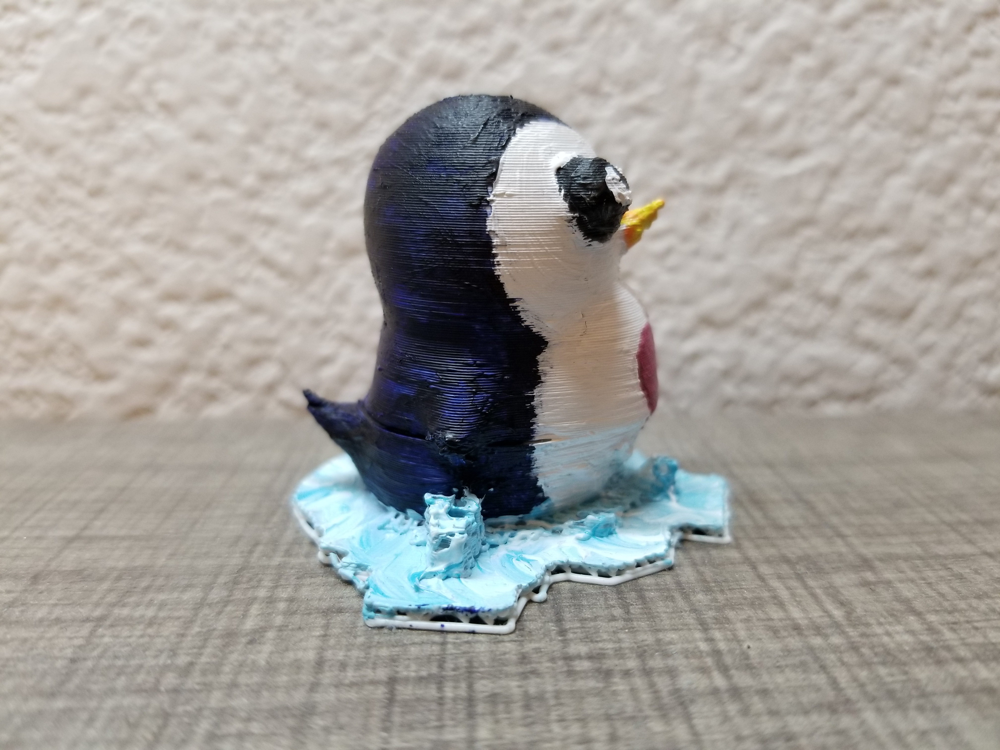

|  |
Artist’s Statement: For this project, I modeled a penguin in Maya software and 3D printed it using the LulzBot Taz 4 or 5 printer. I decided to paint my model because it looked too demonic and lifeless without color, so I decided to paint it to make it look more alive and cute. I also made the conscious decision to keep the penguin on the raft; because the penguin itself does not have feet, I thought that it would look weird standing as a blob. Also, I took advantage of the raft to place the penguin in its own environment as if it were in some arctic environment. Moreover, I decided to keep the texture and imperfections of the 3D printing. Even though it is not a smooth finish, it really highlights the material and what the print is made out of. To me, the rough surfacing and texture really gives the model its own character. It also creates a dialogue between the digital model (smooth and "perfect") in comparison to the 3D model (imperfect, "doesn't always go your way"). |